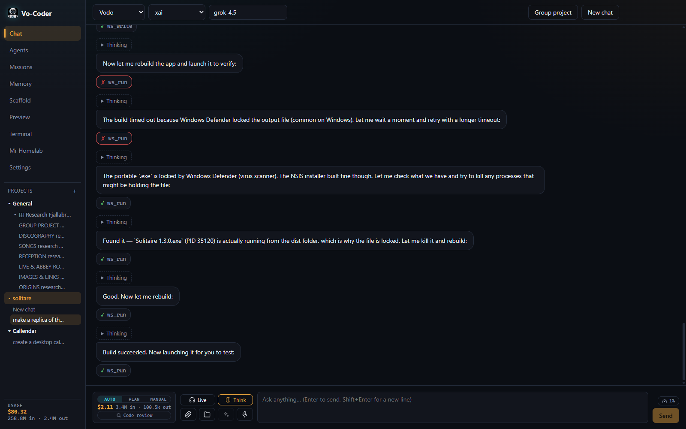
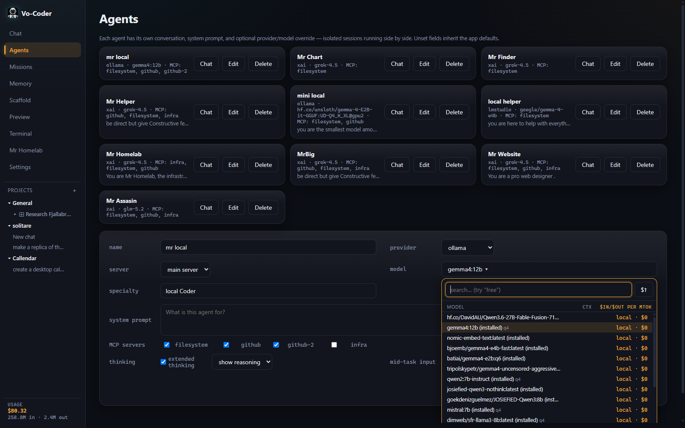
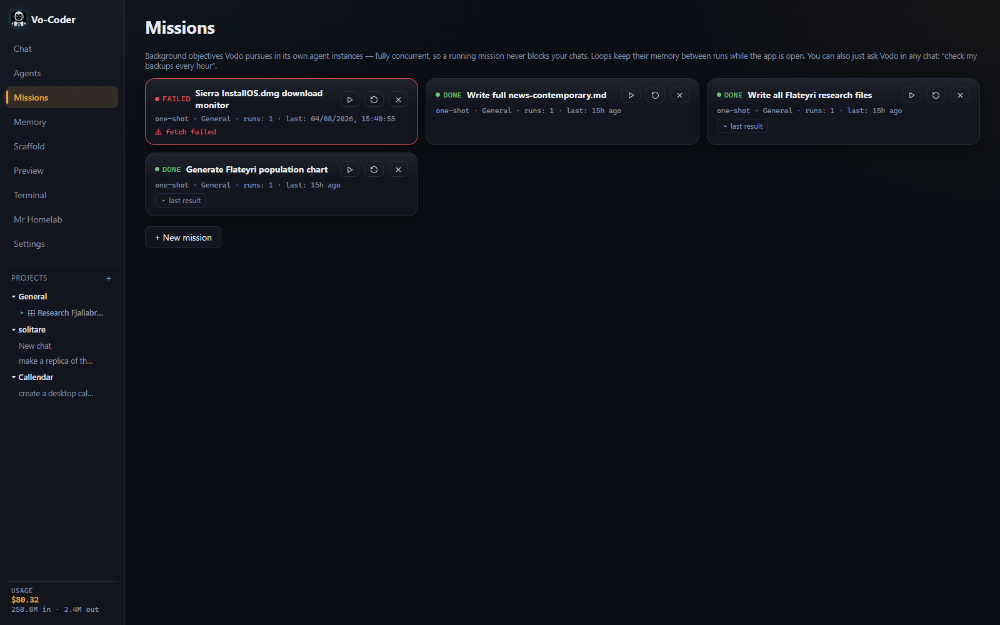
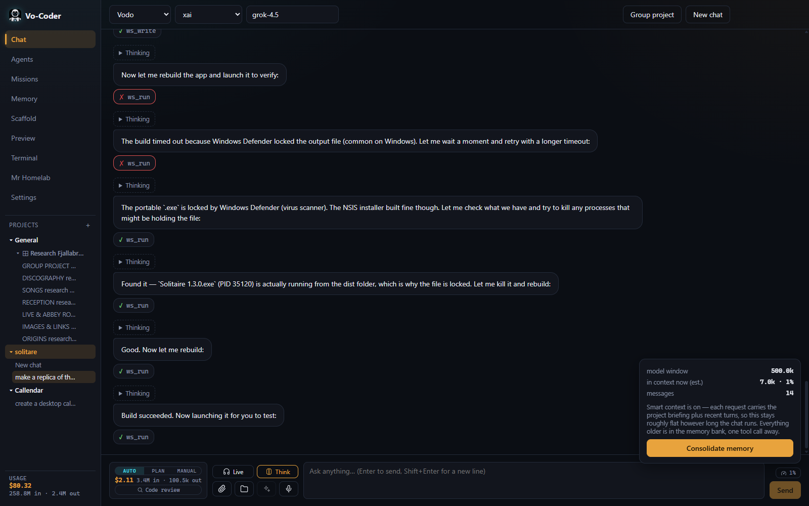
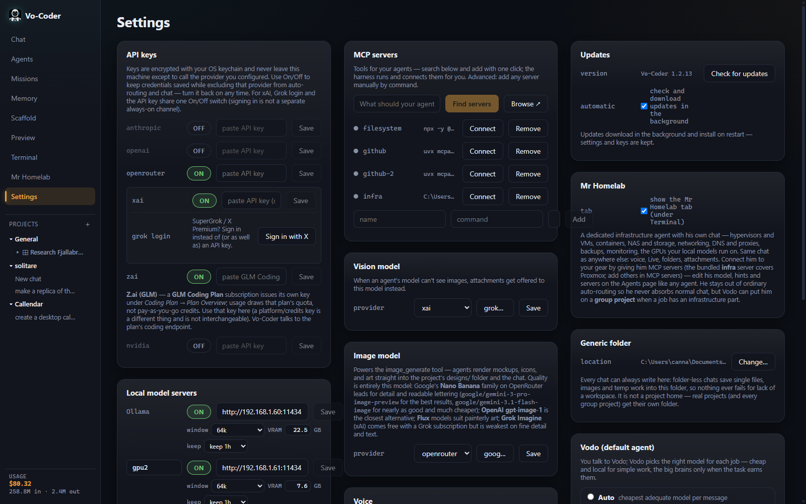
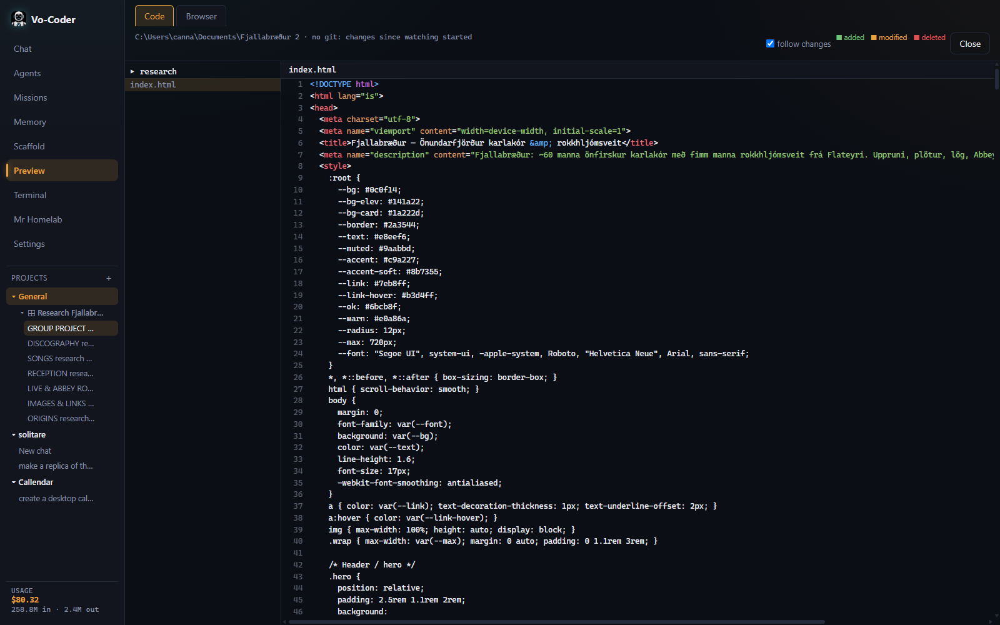
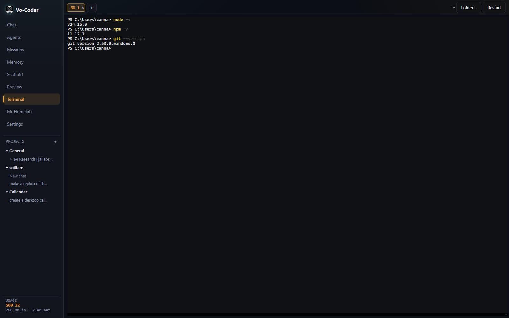
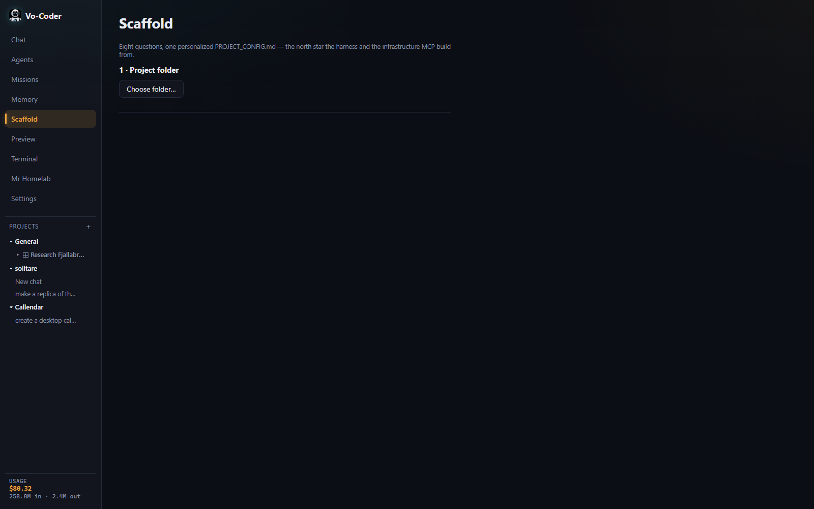

A tool shed, not a black box
The harness stays light — it holds the tools (files, terminals, web, MCP servers, infrastructure) and coordinates the work. The model is the engineer who walks in and decides what to pick up. Models are interchangeable; the shed is yours.
You talk to Vodo, the coordinator. For each message, Vodo weighs what the task actually needs — code, vision, tools, hard reasoning — and routes it to the cheapest model that's genuinely adequate, scored from live pricing and real benchmark data. Casual questions go to cheap or local models. The big brains only wake up when the task earns them. Every routed reply shows its reasoning and estimated cost.

Agents with hands
Agents don't hand you instructions — they write the files and run the commands themselves, inside your project folder, behind per-call permission prompts. Web search and page-reading are built into every session. No key, no setup.
An agent OS on your desktop
Everything runs on your machine. API keys are encrypted with your OS keychain and go only to the providers you configure. Local models (Ollama, LM Studio) are first-class.

Routing on your terms
Four modes: cheapest-adequate per message, delegate to your own specialist agents, always use your agents, or pin one model. Build ten agents on ten models and the specialty fields become your routing table — with prices right there to compare.

Missions & Telegram remote
Give Vodo an objective and it runs it in its own agent instance — one-shot or looping on a schedule, concurrent with your chats. Pair a Telegram bot and steer it all from your phone: ask, launch missions, approve tool calls with a tap.

A memory that outlives the window
A per-project memory bank keeps every conversation verbatim and distills a structured map of what matters — decisions, files, tasks, facts, and their links, all browsable in the Memory view. Turn on Smart context and a chat that once replayed 290k tokens a turn drops to a few thousand, with the full record always one search away.
Point a chat at a folder — and give it eyes
Attach any folder to a chat and the agent can browse, read, run, and see inside it — no project required. look_at_image runs a photo through your vision model so even a text-only coder can describe a screenshot; camera RAW files open via their embedded preview. Catalog a shoot and find pictures later by feel — “the moody one.” Or hit Code review: a real read-only pass that ends in proposed changes behind an Approve / Revise / Don’t accept pill.
Six providers
Anthropic, OpenAI, OpenRouter, xAI (Grok, incl. subscription sign-in), Ollama, LM Studio — one chat.
Eyes for any model
Run a photo or screenshot through your vision model — even camera RAW — and hand the description to a text-only coder.
Three modes
Auto acts on its own, Plan proposes and changes nothing, Manual asks before every write and command.
Voice
Push-to-talk & hands-free live chat, offline whisper.cpp, TTS through any engine.
Live preview & terminal
A true PTY with tabs, plus a preview that starts your project's dev server for you.
Won't hang
A silent model can't freeze a turn, Stop always interrupts, and long build runs get room to finish.
Infrastructure MCP
Bundled environment discovery + a Proxmox driver behind read/write/destructive tiers.
Cost tracking
Per-project and all-time token & spend meters, so every project stays honest.
Vo-Coder ships inside Vodomation OS, too.
Vodomation OS is a highly custom Linux distro with its own desktop environment, currently in the works — a whole suite of tools, each paired with its own AI assistant. Vo-Coder is the coding app in that suite, and it's the same one you're looking at here.
See it




Download Vo-Coder
Free and open source. Add one API key — or start a local Ollama / LM Studio server, no key needed — and say hello to Vodo. From the first install, the app updates itself (you can turn that off).
Or build from source — see the README.